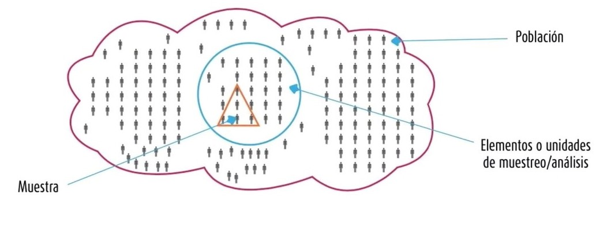

![]()
- Exponer la definición de una muestra
- Exponer los diferentes tipos de muestra
- Ejemplificar la manera de calcular y seleccionar una muestra
Para la elaboración de este artículo utilicé como referencia el libro Metodología de la investigación (Sampieri, Collado, y Lucio 2014).
¿Qué es una muestra?
Una muestra es un subgrupo de la población o universo del cual se recolectan datos y que debe ser representativo de esta. Se utiliza para economizar el tiempo de levantamiento de la información y los recursos para realizar el levantamiento. Para elaborar una muestra es preciso definir la unidad de muestreo y de análisis. Además requiere delimitar la población para generalizar los resultados y establecer parámetros.
Se realiza una muestra cuando la inclusión de todos los individuos de una población no es determinante. Por ejemplo, no utilizaríamos una muestra en caso estemos realizando un censo en el que se precisa la participación de todos los ciudadanos.
Con una muestra, el investigador pretende que los resultados encontrados puedan generalizarse a una población mayor. En la esencia del muestreo cuantitativo, el interés es que la muestra sea estadísticamente representativa.
flowchart LR A(Muestra) --> B(Clases) B --> C(Probabilística) B --> D(No probabilística\n o dirigida) C --> E(Muestra aleatoria simple) C --> F(Muestra estratificada) C --> G(Muestra por racimos o clústers)
A continuación, veremos los pasos para definir una muestra.
Paso 1: Definir la unidad de muestreo y de análisis
En este paso es crucial definir qué o quiénes son los participantes del estudio. La unidad de muestreo es el tipo de caso que se escoge para estudiar.
Por ejemplo, si la pregunta de investigación es ¿discriminan a las mujeres en los anuncios de televisión? Nuestra unidad de análisis correcta serían las mujeres y hombres que aparecen en los anuncios de televisión, para comparar si ambos son presentados con la misma frecuencia e igualdad de papeles desempeñados y atributos.
La unidad de análisis suele ser lo mismo que la unidad de muestreo; sin embargo, no en todos los casos sucede. La unidad de análisis refiere a los elementos que se utilizaran como casos dentro de una investigación. Por ejemplo, si se pretende estudiar las razones por las que asesinos seriales jóvenes cometieron sus delitos, la unidad de muestreo (el caso) sería el asesino (lo que es seleccionado), mientras que la unidad de análisis podría ser cada asesinato particular (cada crimen se analizaría de manera particular).
En la mayoría de casos, unidad de muestreo/análisis se utiliza de manera intercambiable. Una vez definida la unidad de muestreo/análisis se procede a delimitar la población que va a ser estudiada.
Paso 2: Delimitar la población

En progreso…
Paso 3: Elegir el método de selección de la muestra
.
Paso 4: Precisar el tamaño de la muestra requerido
.
Paso 5: Aplicar el procedimiento de selección
.
Paso 6: Obtener la muestra
.
Referencias
Reutilizar
Citación
@online{sotelo2022,
author = {Santiago Sotelo},
title = {Diseño de muestra},
date = {2022-08-31},
langid = {es}
}